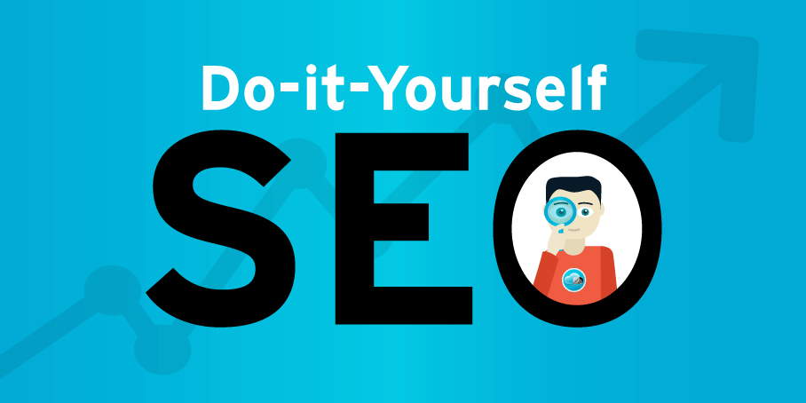

Web Tech
5 Easy SEO Fixes You Can Do Today on Your WordPress Site

SEO in 30 Minutes or Less (Seriously!)
So, you’ve got your WordPress website up and running, but it’s not showing up on Google the way you want it to. Don’t stress — improving your SEO doesn’t have to be complicated or time-consuming. With just a few simple steps, you can see better results in 30 minutes or less.
Ready to boost your website’s visibility on search engines? Let’s dive in!

Install Yoast SEO for a Simple SEO Solution
First things first, if you haven’t already, get Yoast SEO installed. This popular plugin is a game-changer when it comes to simplifying SEO for your WordPress site. Think of Yoast as your personal SEO assistant, guiding you through each page to make it more SEO-friendly. It’s like having a coach by your side, minus the expensive hourly rates!
Optimize Your SEO Titles and Meta Descriptions
Next up — SEO titles and meta descriptions. These are what show up in search engine results, and they play a huge role in attracting clicks. Keep them clear, concise, and focused on keywords relevant to your business.
- SEO Title: This is the clickable title that shows up in search results. Be sure to include your main keyword.
- Meta Description: This is the short snippet under the title in search results. It’s like your page’s elevator pitch. Include keywords, but don’t make it sound like a robot wrote it.
For example, if you own a bakery, your SEO title might be “Fresh, Handmade Breads | Bakery Name,” and your meta description could be “Visit Bakery Name for delicious, fresh breads baked daily. We offer gluten-free and vegan options too!” See how easy that is?

Check Your H1 Tag for Clarity and Keywords
Now, let’s talk about your H1 tag — this is the main title on your page, and it tells both users and search engines what your page is about. Make sure your H1 is clear and descriptive, and that it includes relevant keywords.
Don’t use something vague like “Welcome to My Website!” Google doesn’t care about that. For our bakery example, a better H1 would be “Fresh Baked Goods Every Day at Bakery Name.”
Remember: Only one H1 tag per page is needed — that’s the gold standard!
Use H2 and H3 Tags to Organize Content
Once your H1 is set, it’s time to structure the rest of your content with H2 and H3 tags. These subheadings make it easier for both your visitors and search engines to navigate your page.
Start with H2s for main sections (like “Our Signature Breads” or “Gluten-Free Options”) and use H3s for further details. Proper hierarchy is key: H1 for your main title, H2 for sections, and H3 for sub-sections. This helps Google understand your page’s structure.
Optimize Your Images for Speed and SEO
It’s easy to forget about images, but they can have a major impact on your site’s performance. Big, slow images can drag your site’s speed down — and search engines like Google hate slow sites.
Here’s how to optimize your images:
- Rename images to something descriptive and keyword-rich (e.g., “fresh-sourdough-bread.jpg”).
- Resize your images to keep file sizes under 200KB. Faster images = faster site.
- Use the right format: Stick with .jpg or .webp for most images, and use .png only for images with transparent backgrounds.
Also, make sure your images have proper alt text. It’s not only good for accessibility, but it also gives Google a better understanding of your images.

Add Internal Links to Boost SEO and User Experience
Internal links are an underrated, but powerful, SEO tool. By linking to other pages on your website, you help Google understand the structure of your site. Plus, it makes it easier for visitors to explore related content.
For example, on your bakery’s homepage, you could link to a page on “gluten-free bread options” or “custom cakes for events.” Just make sure the links are relevant and useful to your readers.
Final Thoughts
Improving your SEO doesn’t have to be a daunting task. With just a few simple changes — like installing Yoast, optimizing titles and descriptions, and using the right headings — you’ll start to see a difference in how your site performs on search engines.
And remember, SEO is an ongoing process. Keep tweaking, updating, and improving as you go. In 30 minutes, you can make a huge impact, and with a little time, your WordPress site will be ranking higher and driving more traffic.
Ready to take your website’s SEO to the next level? Let’s get started!
How to Book a Call
Booking a call is simple! Just visit my Calendly and choose a time that works best for you, or you can always reach me via email at leanne@leannedigital.com.
And don’t worry — your first consultation is free! So, if you’re ready to talk about web design, branding, or anything digital marketing-related, I’d love to hear from you.